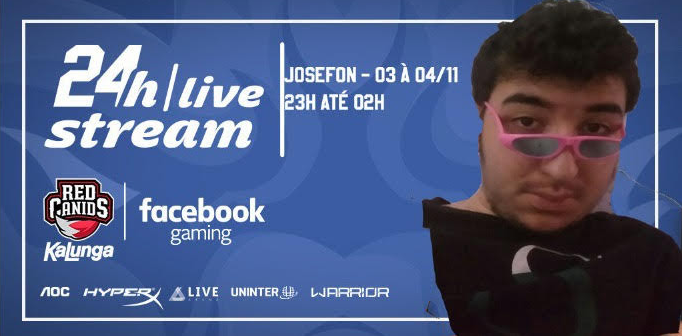

/ josefon - Se inscreve la no meu canal!
/ josefon - Se inscreve la no meu canal!
Meu nome é José, sou um ex-jogador profissional de world of warcraft pvp desde 2005 tenho 40 anos
e ocasionalmente faço lives na twitch e posto uns videos no youtube sobre como melhorar em pvp.
No entanto é bem ocasionalmente mesmo já que agora sigo focado na carreira de 20 anos em programação.